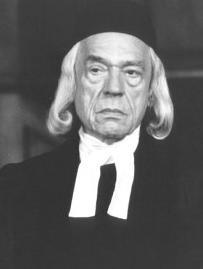
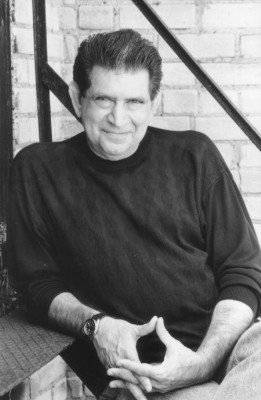
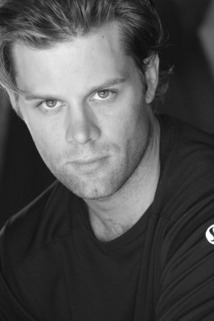
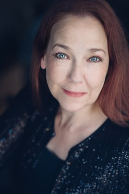
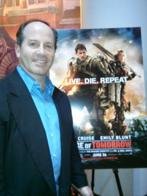

#1799 Quiz Show
Auszeichnungen: für 4 Oscars nominiert 1 BAFTA-Awards gewonnen


 IMDB-Wertung: 7.5 / 10
IMDB-Wertung: 7.5 / 10  Metascore: 88
Metascore: 88 
US-amerikanisches Drama von Robert Redford, das auf einer wahren Begebenheit beruht. Der junge Anwalt Dick Goodwin (Rob Morrow) deckt in den 1950er Jahren einen ungeheuerlichen Medienskandal auf: in der grossen Quiz Show geht es nicht mit richtigen Dingen zu. Im Mittelpunkt steht der erfolgreiche Kandidat Charles Van Doren (Ralph Fiennes), der nicht immer alle Fragen selber beantworten kann.
Jahr: 1994
Dauer: 133 Minuten
FSK: 6
Land: USA Studio: Buena Vista PicturesTonspuren: DD5.1 - ,
Untertitel:
Auflösung: 1080p (1920x1040) Größe: 10547 MB
Genre: Drama, Geschichte
Regisseur:  Robert Redford
Robert Redford
Drehbuch: Paul Attanasio, Richard N. Goodwin
Soundtrack: Mark Isham
Darsteller:
 John Turturro als Herbie Stempel
John Turturro als Herbie Stempel- Rob Morrow als Dick Goodwin
 Ralph Fiennes als Charles Van Doren
Ralph Fiennes als Charles Van Doren-  Paul Scofield als Mark Van Doren
 David Paymer als Dan Enright
David Paymer als Dan Enright Hank Azaria als Albert Freedman
Hank Azaria als Albert Freedman Christopher McDonald als Jack Barry
Christopher McDonald als Jack Barry Elizabeth Wilson als Dorothy Van Doren
Elizabeth Wilson als Dorothy Van Doren Allan Rich als Robert Kintner
Allan Rich als Robert Kintner Mira Sorvino als Sandra Goodwin
Mira Sorvino als Sandra Goodwin Paul Guilfoyle als Lishman
Paul Guilfoyle als Lishman Griffin Dunne als Account Guy
Griffin Dunne als Account Guy Michael Mantell als Pennebaker
Michael Mantell als Pennebaker Byron Jennings als Moomaw
Byron Jennings als Moomaw Ben Shenkman als Childress
Ben Shenkman als Childress Timothy Busfield als Fred
Timothy Busfield als Fred Bruce Altman als Gene
Bruce Altman als Gene Martin Scorsese als Martin Rittenhome
Martin Scorsese als Martin Rittenhome Ernie Sabella als Car Salesman
Ernie Sabella als Car Salesman Barry Levinson als Dave Garroway
Barry Levinson als Dave Garroway Debra Monk als Kintner's Secretary
Debra Monk als Kintner's Secretary Mario Cantone als Passerby
Mario Cantone als Passerby- Timothy Britten Parker als Researcher
-  Jerry Grayson als Limo Driver
-  Matt Keeslar als NBC Pages
-  Harriet Sansom Harris als Enright's Secretary
 Carole Shelley als Cornwall Aunt
Carole Shelley als Cornwall Aunt- Shawn Batten als Cornwall Cousins
- Jeffrey Nordling als John Van Doren
 Illeana Douglas als Woman at Book Party
Illeana Douglas als Woman at Book Party- Gretchen Egolf als Student at Book Party
- Anthony Fusco als Librarian
 Douglas McGrath als Snodgrass
Douglas McGrath als Snodgrass Calista Flockhart als Barnard Girls
Calista Flockhart als Barnard Girls Kelly Coffield Park als Queens Neighbors
Kelly Coffield Park als Queens Neighbors Joe Lisi als Reporter
Joe Lisi als Reporter- Reno als Woman at Door
 William Fichtner als Stage Manager
William Fichtner als Stage Manager Katherine Borowitz als #1 Mom
Katherine Borowitz als #1 Mom Michael J. Burg als Student , uncredited
Michael J. Burg als Student , uncredited Hélène Cardona als Student , uncredited
Hélène Cardona als Student , uncredited Richard Council als Reporter #1 , uncredited
Richard Council als Reporter #1 , uncredited-  Brian Gildea als Student , uncredited
- Jerry Griffin als Doorman , uncredited
 Ethan Hawke als Don Quixote Student , uncredited
Ethan Hawke als Don Quixote Student , uncredited- Michael Luceri als Student , uncredited
 Peter Morse als Student , uncredited
Peter Morse als Student , uncredited Ron Ostrow als Photographer , uncredited
Ron Ostrow als Photographer , uncredited- John Ponzio als NBC Page , uncredited
- Paul Vincent Rapisarda als Courtroom Attendee , uncredited
Datei: X:\1994\Quiz Show (1994, FSK6, 1920x1040).mkv seit 23.08.2015
Festplatte: HD 1992-1995
 Es gibt insgesamt 67 Filme in der Gruppe '1994'
Es gibt insgesamt 67 Filme in der Gruppe '1994'